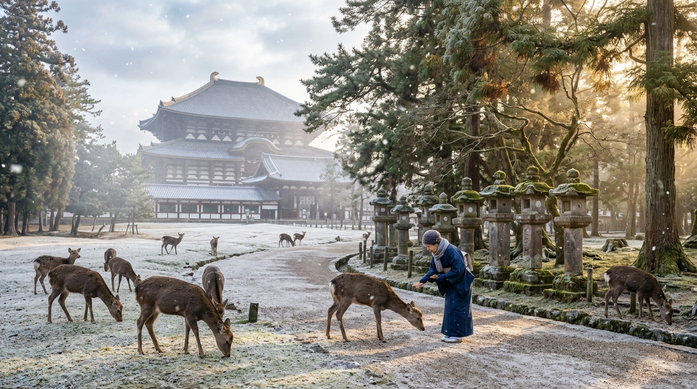

DAY 2 OF 9
Sun, 17 Jan 2027
❄️ 7°C • Clear Winter Sun
🦌 Nara Park Sacred Deer → 🌇 Umeda Sky Building Sunset
Estimated Spend
RM 216
~¥7,240
Halal Meals
1 Verified
100% Halal
Schedule
9 Activities
Timed Plan
Accommodation Base
Plum Hotel
Central Osaka base; pack luggage tonight for Kyoto transfer tomorrow • Night 2 of 2 • Stay until 9:00am Day 3
DAY 2 ROADMAP & TRANSIT ROUTE
Geographic route & connected transit stops. Click any card or pin to explore.
Day 2 Chronological Timeline & Connected Transit
8 Connected Stops
08:30–09:00
Walk Transit
Free / Included
Plum Hotel ➔ Osaka-Namba Station
Map
HIGHLIGHT ACTIVITY
Morning Walk North (8 min)
Kintetsu Ticket Concourse
Depart Plum Hotel Osaka; walk north 8 min (650m) along Daikokucho avenue.
Enter Osaka-Namba Station direct into Kintetsu underground gates for the Nara Express.
Osaka-Namba Station
•
Walk 8 min (650m) north to Kintetsu ticket gates
09:00–10:00
Train Transit
¥680 • ~RM 20
Osaka-Namba ➔ Nara (Kintetsu Rapid Express)
Map
HIGHLIGHT ACTIVITY
Kintetsu Rapid Express
Pass Mt. Ikoma Tunnel
38-min Direct Ride
Board Kintetsu Nara Line Rapid Express (Platform 1/2, 38 min direct, ¥680).
Smooth express transit through Mt. Ikoma Tunnel straight into Kintetsu-Nara terminal.
Kintetsu-Nara Station
•
Platform 1/2 ➔ 38 min direct (6 stops, ¥680)
10:00–14:00
Sightseeing
¥600 • ~RM 18
Nara Park & Todai-ji (Sacred Bowing Deer)
Map
HIGHLIGHT ACTIVITY
Feed Bowing Sika Deer
Todai-ji Great Bronze Buddha
Ancient Nara Pine Forest
Exit 2 into Nara Park; purchase deer crackers (¥200) to feed friendly bowing deer.
Walk to Todai-ji Daibutsuden (entry ¥600) to see the monumental 15-meter bronze Buddha.
Kintetsu-Nara Station (Exit 2)
•
Walk 5 min (400m) east on Noborioji-dori into park
14:00–15:00
Train Transit
¥680 • ~RM 20
Nara ➔ Osaka-Namba (Return Train)
Map
HIGHLIGHT ACTIVITY
Rapid Express Return
Plum Hotel Afternoon Rest
Catch Kintetsu Rapid Express back to Osaka-Namba Station (38 min, ¥680).
Walk 8 min to Plum Hotel for a quick afternoon rest, freshen up, and prayer.
Osaka-Namba Station
•
Kintetsu train 38 min ➔ Walk 8 min back to Plum Hotel
16:00–16:30
Subway Transit
¥240 • ~RM 7
Plum Hotel ➔ Umeda Station (Subway)
Map
HIGHLIGHT ACTIVITY
Midosuji Line Northbound
Underground Walkway (9 min)
Board Midosuji Line at Daikokucho direct to Umeda Station (12 min, 5 stops, ¥240).
Exit North Central Gate; follow underground pedestrian tunnel (9 min) to Umeda Sky Building.
JR Osaka / Umeda Station
•
Midosuji Line 12 min ➔ Walk 9 min (650m) via underground walkway
16:30–18:30
Sightseeing
¥1,500 • ~RM 45
Umeda Sky Building Floating Garden (Sunset View)
Map
HIGHLIGHT ACTIVITY
Floating Garden Sunset (17:05)
Glass Tube Escalator (35F)
360° Open-Air Skyline View
Ascend the futuristic glass tube escalator bridging the twin 173m towers to Kuchu Teien Observatory.
Watch the panoramic winter sunset over Osaka Bay and Yodo River (entry ¥1,500).
Kuchu Teien Observatory
•
Glass elevator to 35F + tube escalator to open-air rooftop
18:30–20:30
Halal Dining
¥2,000 • ~RM 60
Dinner: Ali's Kitchen Pakistani (Shinsaibashi)
Map
HIGHLIGHT ACTIVITY
Michelin Bib Gourmand Biryani
Garlic Naan & Mutton Karahi
100% Halal Verified
Take Midosuji Line from Umeda to Shinsaibashi Station (6 min, ¥240) ➔ Exit 1, walk 2 min.
Feast on award-winning Halal Pakistani aromatic biryani, sizzling kebabs, and fresh naan.
Shinsaibashi Station (Exit 1)
•
Midosuji Line 3 stops (6 min) ➔ Walk 2 min (150m)
20:30–21:30
Hotel Logistics
¥190 • ~RM 6
Return to Plum Hotel Osaka
Map
HIGHLIGHT ACTIVITY
Subway 1 Stop to Base
Pack for Kyoto Move Tomorrow
Hop on Midosuji Line from Namba to Daikokucho Station Exit 1 (2 min, ¥190) ➔ Walk 3 min to hotel.
Pack suitcases and prepare for hotel checkout and transit to Kyoto in the morning.
Plum Hotel Osaka Base
•
Subway to Daikokucho Exit 1 ➔ Walk 3 min (250m) to Plum Hotel